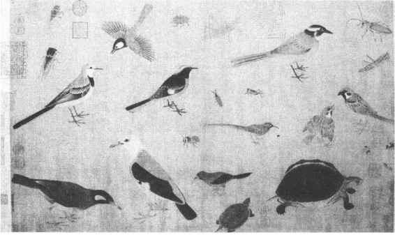
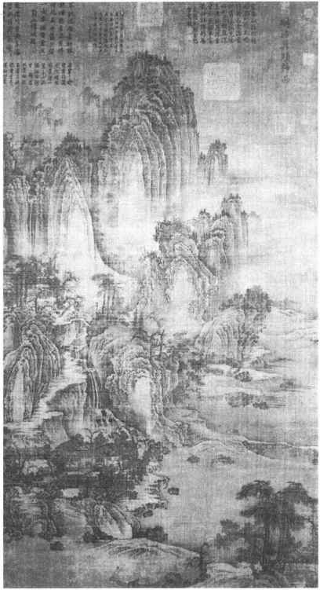
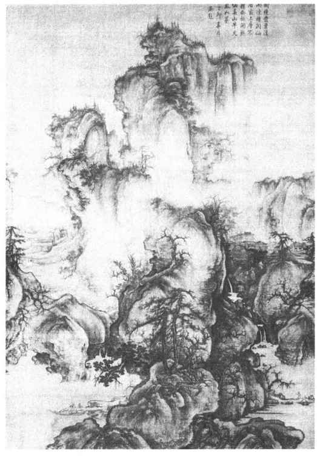
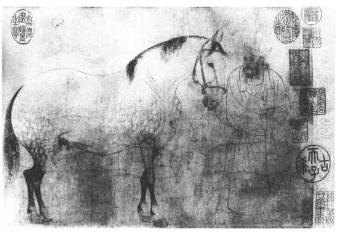
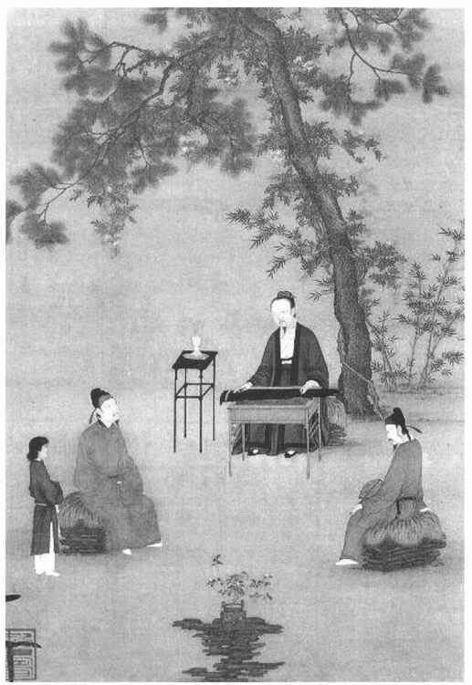
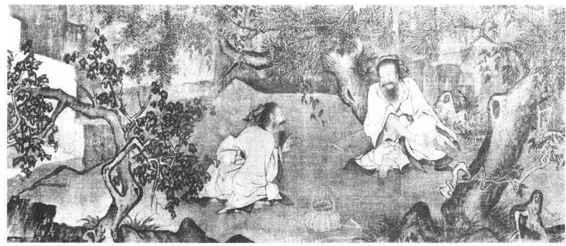
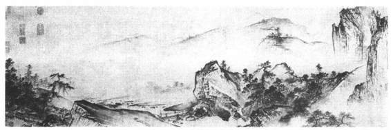

唐末藩镇割据，国家走向分裂，相继出现五代十国。五代时期绘画盛行的地区，主要在中原、西蜀和南唐所辖地。西蜀和南唐都建立了画院，山水、花鸟画成熟，出现了一批对后世有极大影响的画家。北宋统一后，绘画得到了进一步发展，画院兴盛，文人画兴起。这一时期传世的作品较多，寺观等壁画虽也有所成就，相形之下，就退居其次了。
周文矩，金陵句容人，擅长人物、山水、楼观和仕女。他继承了周昉的传统，但在衣纹描绘上吸收了李煜书法的“行笔瘦硬战掣”（称“战笔描”）即颤抖的笔法，而形成自己的风格。作品有《宫中图》、《重屏会棋图》（今藏故宫博物院）、《琉璃堂人物图》（美国大都会博物馆藏摹本）等。《重屏会棋图》描绘南唐中主李璟和他的兄弟们下棋，有肖像画性质；衣纹作战笔，是其画法特点。《琉璃堂人物图》描写文人士大夫的诗酒活动，各有神态。据专家考订，今传韩滉《文苑图》（今藏故宫博物院）即其中一部分。
顾闳中唯一的存世作品是《韩熙载夜宴图》（今藏故宫博物院）。（彩图20）据记载，此画是奉南唐后主李煜之命而作。全画分为听乐、观舞、休息、清吹、送别五个段落，描写韩熙载的夜宴过程，客观上反映了当时贵族的腐朽生活。由于作者技术的高超，对韩熙载的刻画，能通过形象而揭示出内心的矛盾与痛苦；所画其他人物也都各有特点，生动传神。该画线描的工整精细、严谨有法，设色的绚丽清雅、丰富协调，都达到这一时期的最高水平。
这一时期其他著名画家尚有僧贯休、阮郜、胡瓌、卫贤等。胡瓌，契丹人，善画本部族人马，其画作沙碛平远，曲尽契丹族及塞外之景，传世有《卓歇图》（今藏故宫博物院）。卫贤为南唐画院画家，作品有《高士图》（今藏故宫博物院），以山水为主体，画梁鸿、孟光夫妻相敬故事。
“徐黄异体”是指以徐熙和黄筌为代表的、在艺术风格上不同的两大花鸟画流派，最早见于郭若虚《图画见闻志》记载。
徐熙，金陵（今南京）人，性淡泊，所画花鸟多为“汀花野竹，水鸟渊鱼”，“蔬菜茎苗，亦入图画”。其画法“落笔颇重，中略施丹粉”，可能是一种以勾勒为主的淡彩画法，有“落墨花”之称。他的题材内容与画法都表现出文人士大夫情趣，故有“徐熙野逸”之评。但他也为宫廷服务，创作一些装饰用的作品，称为“铺殿花”、“装堂花”。
黄筌，字要叔，成都人，西蜀的宫廷画家。除人物画外，尤擅长花鸟画，多画宫廷中珍禽瑞兽，奇花怪石，以供帝王贵族玩赏。其画法先用细笔勾出轮廓，然后敷以重彩，极其工细精整，富丽堂皇，故有“黄家富贵”之称。传世作品有《写生珍禽图》（今藏故宫博物院）。（图13—9）

图13-9 黄筌《写生珍禽图》局部
入北宋以后，宫廷中主要是黄筌体系的花鸟画占统治地位。宋太祖赵匡胤、太宗赵光义都非常欣赏黄家作品，曾命黄筌之子黄居寀负责搜访天下名画，诠定品目，因而黄家的画法便一时成为宫廷绘画的标准。徐熙之孙徐崇嗣继承祖法，在宫廷中受到排斥，只好改变画风向诸黄学习，创造了“没骨法”。
北宋的花鸟画家除黄居窠、黄居宝外，重要的还有赵昌、崔白、易元吉等。赵昌长于写生，形象生动，被认为达到了“与花传神”的境地。作品有《四喜图》（今藏台北故宫博物院）、《写生夹蝶图》（今藏故宫博物院）。崔白，字子西，作品有《寒雀图》（今藏故宫博物院）、《禽兔图》（今藏台北故宫博物院）等。易元吉，长沙人，善画猿狖獐鹿，曾深入荆湖深山，对野生动物作观察研究，又于家中建庭苑，养育野禽，对之写生。所以他的作品真实生动，被认为“徐熙以后一人而已”。传世有《聚猿图》等。北宋的花鸟画家重视师法自然，观察细致入微，创作精密不苟。北宋是花鸟画发展取得重大成就的时代。
五代是中国山水画发展的重要时期，表现为（1）水墨山水画的确立；（2）画家深入自然，创造了不同的笔法，出现了南北两大派别。代表画家有荆浩、关仝、董源、巨然。
荆浩（号洪谷子），沁水（今属山西）人。唐末隐居太行山，潜心研究山水画，善画北方地区的崇山峻岭，层峦叠嶂，沿袭唐代水墨山水画法而有新的创造。他曾认为吴道子有笔无墨，项容有墨无笔，自己则采二者之长而成一家之法。画法在勾斫之中有皴有染，用笔带方而讲究笔势。传为他的作品有《匡庐图》（台北故宫博物院藏），为全景式山水画，气势雄伟。（图13—10）他曾著《笔法记》一文，着重“图真”，提出“六要”，总结用笔方法“四势”和“二病”，对于山水画的创作和美学研究都是很有价值的见解。

图13-10 传荆浩《匡庐图》
关仝，长安（今属陕西）人，山水学荆浩，多描写关中一带风景，尤喜绘秋山寒林、村居野渡。所绘山水，用笔简练而气势壮阔，石体坚凝，山峰峭拔，杂木丰茂，有枝无干，被认为“笔愈简而气愈壮，景愈少而意愈长”。传世关仝作品有《关山行旅图》（台北故宫博物院藏），勾笔粗壮雄健，境界宏大。
荆浩和关仝对表现大自然雄伟之美开创了新风格，把山水画的思想内容提到了新高度。
董源，字叔达，钟陵（今江西进贤西北）人，南唐中主时任北苑副使。他善画江南风景，山峦浑厚，林木苍茂，烟雾迷濛。用笔长、圆，称为“披麻皴”和“点子皴”。作品有《潇湘图》（故宫博物院藏）、《夏景山水待渡图》（辽宁省博物馆藏）、《夏山图》、《龙宿郊民图》（台北故宫博物院藏）等。
巨然，江宁（今江苏南京市）人，开元寺和尚，山水师法董源。用长披麻皴画山，以破笔焦墨点苔。所画山水为水深林密、烟云流润。作品有《秋山问道图》（台北故宫博物院藏）等。
董源和巨然创立了山水画的另一种新风格，受到元明以来文人画家的推崇和模仿，比荆、关影响更大。
李成，字咸熙，避乱居青州营丘（今属山东）。他是唐王朝宗室，有文学才能，抑郁不得志，好饮酒和游历，善画山水，能表现出山川地势和季节气候的多样变化；山林薮泽，平远险易，索带曲折，一一吐自胸臆而写之笔下。喜作寒林雪景，笔势锋利简洁，有“惜墨如金”之誉。但他的作品到宋时就很少，今有与王晓合作的《读碑窠石图》（画中人马为王晓所作）可供参考。
范宽，字中立，华原（今陕西耀县）人。宋仁宗在位早期尚在。山水受李成影响，也曾师法荆、关。他长期生活在终南、太华一带，所作多关陕地区雄奇壮美景色。山石坚劲，气势逼人。喜作正面主峰，用笔浓重粗壮而短，称为“雨点皴”或“芝麻皴”。作品有《溪山行旅图》、《雪山萧寺图》等（均藏台北故宫博物院）。
李成、关仝、范宽在宋初被认为是并立的三大家，评价为“三家鼎峙，百代标程”的人物。关仝的峭拔、李成的旷远和范宽的雄杰，代表了宋初山水画北方风格的不同气派。
郭熙，字淳夫，河南温县（今属河南）人，是北宋中期卓越的山水画家和绘画理论家。宋神宗时被召入宫廷，为当时宫殿、官署画了大量山水壁画。他的山水画曾受李成的影响，技巧熟练。他有深厚的文学修养；能作大幅山水画，具体、生动、真实，重视创造优美动人的意境，有强烈感染力。作品有《早春》、《关山春雪》（台北故宫博物院藏）、《窠石平远》（故宫博物院藏）和《幽谷》（上海博物馆藏）等。（图13—11）

图13-11 郭熙《早春》
郭熙的绘画理论，集中在由他儿子郭思辑录的《林泉高致集》一书中。全书共六节，前四节阐述画理画法，强调山水画创作要深入自然，进行研究，从对比的角度去观察山水的四时、朝暮、阴晴、远近，高低等不同变化，并把这些变化同人的思想情绪发生联系，从而创造出富有理想和意境的山水画作品。在具体技法上提出了山水画的“三远”（平远、高远、深远）取景法。《林泉高致集》是我国第一部系统完整阐述山水画创作规律的理论著作，在美学发展史上具有重要意义。
文人画是相对于当时工匠（职业画家）画而言的，参与者多为文人士大夫阶层中人，逐渐形成一种新的画风，故有此名。
文人从事绘画活动，虽然由来已久，但真正掀起潮流还是在北宋中后期，重要的画家有燕肃、王诜、李公麟、苏轼、文同、米芾等。
李公麟（1049—1106），字伯时，舒州（今属安徽）人。熙宁三年（1070）中进士，曾为中书门下后省删定官，元符三年（1100）辞官回家，隐居龙眠山，自号龙眠居士。他博学工诗，善鉴别古器物，尤精于画人物鞍马山水等。他创作的题材广泛多样，重视对生活的观察。所画人物，能于不同阶层中区分地域和种族的特征和情态，敢于突破前人定式。他把过去只是作为壁画粉本的“白画”加以精练提高，确立了“白描”在绘画中的独立地位。传世作品有《五马图》（今在日本）、《临韦偃牧放图》（故宫博物院藏），是为杰作。（图13—12）另有传为他作的《免胄图》（今在台湾）、《维摩演教图》（故宫博物院藏），也是值得注意的作品。

图13-12 李公麟《五马图》局部
苏轼（1037—1101），字子瞻，号东坡，四川眉山人。他是北宋文学家、书法家，同时也善画枯木竹石。他在绘画方面的主要贡献在于推进了文人画的发展，并在文人画的理论方面提出了一系列的见解，大体可归纳为以下几点：（1）确定文人画的地位高出于工匠画。他很推崇吴道子，但更推崇王维。正式提出“士人画”的概念。（2）强调艺术形象创造的主观感受，以便达到于象外求意。有“论画以形似，见与儿童邻”、“摩诘得之于象外，有如仙翮谢笼樊”等诗句。（3）提倡绘画表现的诗歌意趣。如说“味摩诘之诗，诗中有画；味摩诘之画，画中有诗。”“古来画师非俗士，摹写物象略与诗人同。”如此等等，都对后世绘画有极大影响。苏轼有作品《枯木怪石图》（今在日本）存世。
文同（1018—1079），字与可，四川永泰人，诗人兼画家。善画墨竹，因出知湖州（今浙江吴兴），所画墨竹及后来学他画法的，称为“湖州竹派”。他曾深入竹林，作仔细观察研究，先有成竹在胸，然后进行创作。有《墨竹图》两幅（一在台湾，另一在广州市博物馆）存世。
米芾（1051—1107），字元章，居襄阳，后定居润州（今江苏镇江）。精于鉴藏古书画和善书法，在绘画上，根据江南烟云风雨变化的特点，用水墨大笔触的方法来表现。这一方法为他儿子米友仁（1086—1165，字元晖）所继承和发挥。世称“米氏云山”。阔笔浓墨皴法，被称为“米点鼓”或“落茄皴”。米芾画已无存，存世《溪山雨霁》等图乃后人所作。米友仁作品有《潇湘奇观图》等。
王诜，字晋卿，神宗时为附马都尉。与苏轼、米芾、黄庭坚等文人往来密切，善画山水，继承李成、郭熙画法。有《渔村小雪图》、《烟江叠嶂图》等作品传世。
宋代继承南唐和西蜀的做法，在宫廷中设置了翰林图画院，集中了当时大批的优秀画家，为宫廷创作服务。到宋徽宗、宋高宗时期，画院最为兴盛，并有一整套制度。当时画院也同科举考试一样，进行开科取士，分为佛道、人物、山水、鸟兽、花竹、屋木六科，以摘古人诗句为题目。考取后按出身分为“士流”与“杂流”，授以不同等级职称，有画学生、供奉、祗候、待诏、艺学、画学正等名目；再通过考核，予以提升。特别恩宠者赐“绯紫”和“佩鱼”，有的还授以朝官衔。画院画家的创作，主要为宫廷服务，受皇帝支配控制；画稿需经审查，才能正式创作。
宋徽宗赵佶（1082—1135）在位期间，是画院的高峰时代。他本人也是出色的画家，善画花鸟和山水。有作品《四禽图》、《雪江归棹图》、《柳鸦图》、《祥龙石图》等，被认为是其亲笔。另外有《腊梅山禽图》、《芙蓉锦鸡图》、《听琴图》等作品，画法工细，设色浓丽，技巧精熟，被认为是画院画家代笔。（图13—13）他还擅长书法，用笔瘦硬，被称为“瘦金体”。赵佶自己是画家，经常对画院进行指导。他的喜好与他对绘画的某些见解，对画院创作风格有着支配作用。他还命臣下整理记录了当时宫廷的古今书画收藏，编辑成《宣和书谱》、《宣和画谱》，是官修的重要书画史论著作。

图13-13 赵佶《听琴图》
张择端和王希孟是徽宗时期宫廷画院里的画家，分别以创作了《清明上河图》和《千里江山图》（两图均藏故宫博物院）而成为画史上不朽的画家。
张择端，字正道，东武（山东诸城）人。原为士人，游学京师，后习绘画。入画院为翰林待诏。工界画，尤长于画舟车、市桥、郭径，自成一家。所作《西湖争标图》、《清明上河图》，被称为神品。
《清明上河图》，绢本，淡着色。以全景式的构图、严谨精细的笔法，描绘了北宋都城汴梁汴河沿岸及东角子门内外市区风貌。全画可分为三段，首段为市郊农村风光；中段以“虹桥”（正名上土桥）为中心，画出汴河及两岸车船运输交通、手工业和商业贸易的繁忙景象；后段则是城门内外纵横交错的街道，商店鳞次栉比，车马轿驼往来熙攘。作者以写实的手法、高超的技巧，集中概括、生动有趣地再现了北宋都市社会生活的各个方面，令人百看不厌，不但是一幅杰出的绘画作品，而且还具有历史文献价值。
王希孟，徽宗时期画院学生，曾得到徽宗赵佶的亲自指授，天才颖悟，进步很快。但寿命不长，作品仅只留下《千里江山图》一件。据图后蔡京题跋，王希孟创作此图时，年仅18岁。
《千里江山图》，绢本，青绿设色。描绘江南自然景色，峰峦冈岭，江湖河港，境界空阔，气势宏伟。其间丛树竹林，楼台庄院，舟楫桥亭，以及各种人物往来活动，繁密不可胜记。整个色调，以暖色赭石衬托出石青、石绿，统一和谐而绚丽夺目，给人以祖国辽阔大地雄伟壮丽的深刻鲜明印象。艺术技巧上，作者主要继承了传统的“青绿法”，适当吸收了董源、巨然的笔法，灵活地将郭熙“三远”取景构图融为一体，因而极富变化。《千里江山图》不但代表了北宋宫廷山水画创作的最高成就，而且也是中国山水画史上罕见的长篇巨制。
南宋时期的山水画在继承北宋的基础上，以追求表现内容的单纯、手法的洗练、形象的突出为目的，而创造出了新的风格，形成时代特征。其代表画家有李唐、刘松年、马远、夏圭，称为“南宋四家”。
李唐，字睎古，河阳（今河南孟县）人。徽宗时画院老画师，汴京陷落，逃亡至杭州卖画为生，后受高宗赏识入画院，授以待诏。善画山水人物，山水画突破全景式构图，多取近景，简练突出，重视意境创造。代表作品《万壑松风图》（台北故宫博物院藏），画高岭飞泉，万松深壑，用斧劈皴，墨色浓重，气势雄浑厚重，开创了南宋新风。人物故事画有《采薇图》（故宫博物院藏）为代表，通过对伯夷、叔齐在首阳山中采薇时稍事休息的描写和人物面部表情的刻画，表现出他们宁肯饿死、不愿投降的刚毅不屈精神，含有深意。（图13—14）

图13-14 李唐《采薇图》局部
刘松年，杭州人，孝宗、光宗、宁宗时的画院画家。其师张敦礼是学李唐的，因而他的山水画继承了李唐风格而有所创造，善于把人物和山水结合起来。代表作品有《四景山水图》（故宫博物院藏），描绘杭州近郊贵族别墅四季风光，笔法细密严谨，富有享乐的庄园情趣。他还画过《耕织图》，受到皇帝的赏识。
马远，字遥父，号钦山，生于钱塘（今浙江杭州），为光宗、宁宗时画院待诏。其先祖及父兄都曾是画院画家。马远继承家学，擅画山水，取法李唐而能出新意，下笔遒劲严整。绘山石，多以带水笔作大斧劈皴，显得方硬多棱角；绘树干用焦墨，常为横斜曲折之态。所绘风光，多为“一角”、“半边”之景，构图别具一格，人谓“残山剩水”，有“马一角”之称，有人认为这是对南宋朝廷偏安一隅的讽刺。后人把他与夏圭并称“马夏”。存世作品有《踏歌》、《华灯侍宴》等。
夏圭，字禹玉，钱塘人。宁宗时为画院待诏。擅长山水人物，喜用秃笔带水作大斧劈皴，笔法苍老而墨汁淋漓。绘楼阁不用界尺，信手而成。所绘景物亦多取“半边”、“一角”之景，有“夏半边”之称，与马远齐名。存世作品有《溪山清远》、《江山佳胜》等。（图13—15）

图13-15 夏圭《溪山清远》局部
南宋时期，由于赵宋政权退避江南，民族矛盾尖锐，长年与北方的辽、金政权处于敌对状态，这时画家们的人物画常常是通过历史题材反映人民收复失土的愿望。早期李唐画有《采薇图》，以歌颂伯夷、叔齐不食周粟饿死于首阳山的气节，讥讽朝廷中的投降派。又有陈居中的《文姬归汉》图、宫素然的《明妃出塞》图，隐喻少数民族的入侵给中原人民带来的悲痛。刘松年的《中兴四将图》画的是刘琦、韩世忠、张浚、岳飞四位抗金名将，是为岳飞恢复名誉而作。此外，无名氏画家留下的《折槛图》、《却坐图》、《锁谏图》等，都是以表彰贤臣、斥责权奸为主题的。
风俗画包括节令画，以描写民间风俗和吉祥用语为主要内容。苏汉臣擅长画婴戏一类题材，有《婴戏图》、《秋庭婴戏图》、《五瑞图》等作品传世。李嵩善画货郎题材，描绘货郎走村串巷，招徕妇女儿童，引起阵阵欢乐。无名氏作品《百子嬉春图》、《村童闹学图》、《大傩图》等，取材于民间风俗活动，色彩艳丽，富有情趣，具有今天年画的性质。当时的汴梁和临安，每逢年节，市场上均有门神、桃符、钟馗、虎头一类书画出售。
南宋时代还有其他许多画家，如杨无咎、赵孟坚、郑思肖、梁楷、牧溪等，也都对后世画风颇有影响。